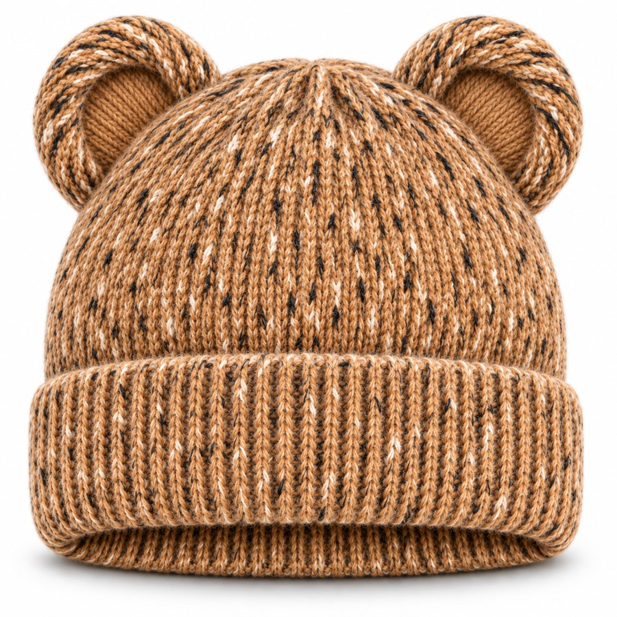
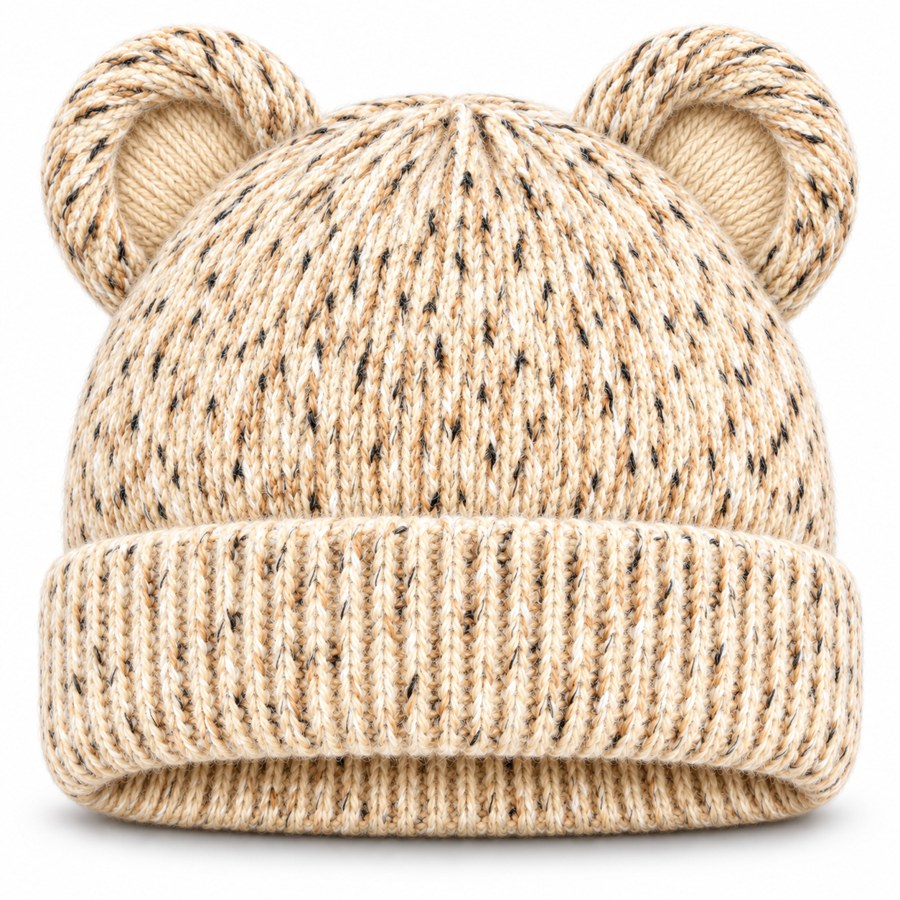
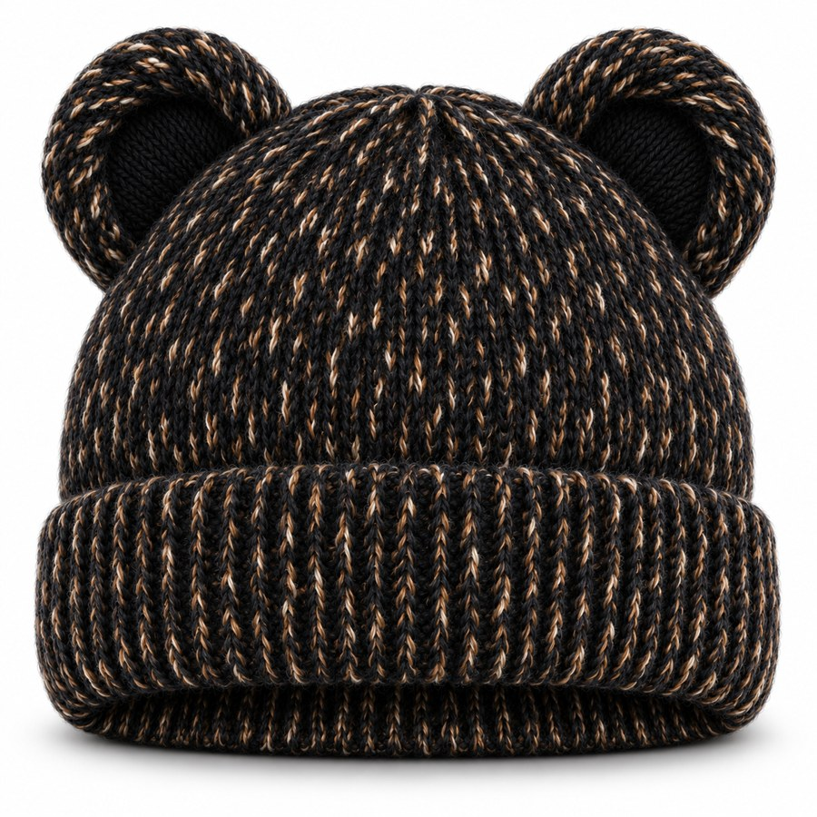

Reading mode — All instructions are available below. This preview may not run JavaScript, so calculators, saved progress and interactive counters require a normal hosted browser page. Default pattern: adult medium, 22-inch head, 28 stitches and 40 rounds per 4 inches. Verify gauge before starting.
From the first stitch to the last thread. A guided knitting project for curious crocheters and first-time knitters.
Camel edition · 144 stitches · Adult prototype

Design concept · accent colors shown stronger than target
Choose your colorway
One silhouette, three expressions.
95 / 2.5 / 2.5
Selected
Camel
Warm, understated and timeless.

Cream
Soft ivory with a whisper of contrast.

Black
Rich black with delicate warm flecks.
Your next move
Project progress0 / 9
0% complete
Next: Prepare your yarn
Knitting school
0 / 9 lessons
Learn the movements first with practice yarn, then move on to your cashmere.
Prototype pattern: the exact cashmere yarn weight and blocked gauge are still unknown. Test the fabric and fit before committing to a full hat.
The learning room
Your first stitches.
A short course designed for someone who knows crochet but has never picked up knitting needles.
0/9 completed
Start with inexpensive light-colored medium-weight yarn and 4–5 mm needles. Save the fine cashmere until you can make and count consistent stitches.
LESSON 01
Getting comfortable
Meet your needles and yarn.
Step-by-step lesson
Hold the loaded needle in your left hand and the working tip in your right. In Continental knitting, tension the yarn over your left index finger. Keep the loops loose enough to slide.
Practice: Practice threading the yarn through your fingers without squeezing.
Make a slip knot. Leave a tail about 3½ times the cast-on width, plus extra. Hold the tail on your thumb and working yarn on your index finger; lift the thumb strand, catch the index strand and pull it through. Release and retension the thumb. The slip knot counts as one.
Practice: Cast on 20 stitches; check that the edge stretches.
Yarn behind. Insert the right needle into the first loop knitwise, catch the yarn, pull a new loop through, then slide the old loop off the left needle. Repeat.
Practice: Knit 20 stitches, turn and repeat for 10 rows.
Yarn in front. Insert the right needle into the front of the first loop from right to left. Wrap the yarn, draw a new loop through and slide the old loop off. Move yarn between tips when changing stitches.
Practice: Alternate a knit row and a purl row to create stockinette.
With an even cast-on, spread loops around the cable. Check the edge is not twisted. Place a beginning marker and knit into the first loop. Alternate K1, P1 around; repeat. Never turn after a round.
K2tog: insert through two stitches together and knit as one. SSK: slip two stitches separately knitwise, then knit them together through their back loops. Each decreases the count by one.
Practice: Practice paired decreases, with purl return rows.
For a small crown, divide stitches across four double-pointed needles, knitting with a fifth. For a flat bind-off, knit two, lift the older stitch over the newer one, knit one and repeat. Pull the tail through the final loop.
Use a blunt tapestry needle to join matching panel edges. For accents, follow part of an existing knit V with a fine contrast strand, then secure it on the reverse without pulling tight.
Practice: Try accent embroidery and seam tension on a swatch.
Default adult medium. Use the same construction for all three colorways; adjust the accent colors accordingly.
1. Prepare your yarn
Confirm a fine, soft fabric with the actual cashmere before you begin. This is a prototype, not a test-knitted pattern.
Gather your supplies
Measure and swatch
Measure the widest part of the head with a flexible tape.
Start with approximately 3 mm needles; make a stockinette swatch in the round (or simulate circular knitting). Make it large enough to measure the middle 4 inches without the edges.
Wash according to the yarn label, dry flat, then count the stitches and rows across 4 inches.
If more stitches fit in 4 inches, try larger needles. If fewer fit, try smaller needles. Do not sacrifice the desired fabric to match the default gauge.
Enter the blocked gauge and head size in Tools & sizing. For the ears, compare flat stockinette gauge separately.
Starting estimate: 350–450 yards if fingering weight, not verified for your particular yarn. Needles roughly 2.75–3.25 mm for body and 2.25–2.75 mm for ribbing; swatch to confirm.
Alternate knit and purl stitches until the unfolded ribbing measures 5.5 inches (14 cm). It will fold to approximately 2.75 inches.
Knit one stitch with the yarn behind the needles.
Move the yarn between the tips to the front. Purl one stitch.
Move the yarn between the tips to the back. Repeat K1, P1 until the marker.
Slip the marker to the other needle and begin another round in the same pattern.
Continue until the measured length is 5.5 inches. Do not cut the yarn or bind off.
Use a tape measure, not the round counter, to determine the finished ribbing length: ribbing gauge differs from stockinette.
4. Knit the body
Change to your main circular needle. Knit every stitch of every round until the stockinette section measures 4.05 inches (10.3 cm) above the ribbing.
Use the larger right needle tip to knit the first round off the smaller circular needle.
Continue knitting all stitches; do not purl or turn.
Measure from the top of the ribbing. Count stitches before starting the crown.
Expected stitch count: 144. The length is computed from your target height and crown depth. The shape is an estimate to test physically.
5. Shape the crown
Divide 144 stitches into 12 sections of 12 stitches each. Use 12 markers including the beginning marker. On each decrease round, knit two together at the end of each section.
Count 12 stitches between successive markers.
Follow the table one round at a time. K means knit; K2tog means knit the next two loops as one.
When the circular needle becomes too long for the remaining stitches, switch to double-pointed needles or Magic Loop. Keep the sections in order.
In the final round, remove the section markers and knit the 12 stitches together in pairs. With six remaining loops, cut a tail of 8–10 inches, thread it through all six, remove needles and pull closed. Weave the tail into the inside.
Knit four flat panels (two for each ear). Use the primary yarn and the main needles. Turn the work at the end of every row; knit odd rows and purl even rows unless stated.
Cast on 12 stitches per panel. Target width before seaming about 2.85 inches; flat gauge may differ from circular gauge. The generated dimensions are approximate; knit and measure one ear before making the others.
Round / row
Instruction
Sts. left
1
Knit all stitches.
12
2
Purl all stitches.
12
3
KFB, knit to last stitch, KFB.
14
4
Purl all stitches.
14
5
KFB, knit to last stitch, KFB.
16
6
Purl all stitches.
16
7
KFB, knit to last stitch, KFB.
18
8
Purl all stitches.
18
9
KFB, knit to last stitch, KFB.
20
10
Purl all stitches.
20
11
Knit all stitches.
20
12
Purl all stitches.
20
13
Knit all stitches.
20
14
Purl all stitches.
20
15
K1, SSK, knit to last 3 sts, K2tog, K1.
18
16
Purl all stitches.
18
17
K1, SSK, knit to last 3 sts, K2tog, K1.
16
18
Purl all stitches.
16
19
K1, SSK, knit to last 3 sts, K2tog, K1.
14
20
Purl all stitches.
14
21
K1, SSK, knit to last 3 sts, K2tog, K1.
12
22
Purl all stitches.
12
23
K1, SSK, knit to last 3 sts, K2tog, K1.
10
24
Purl all stitches.
10
25
Bind off remaining stitches.
—
Shaping reminders
KFB makes two stitches from one. SSK and K2tog each decrease one stitch. Bind off on the last row; leave enough tail for sewing.
7. Assemble the hat
Combine two panels per ear, smooth V-shaped faces outward. No stuffing for the initial prototype.
Align the two panels and sew around their side and upper edges using small, even stitches.
Gently cup the base inward, sew the bottom closed and hide the yarn tail. Repeat for the second ear.
Fold the brim and lay the hat flat. Place the ears at approximately 10 and 2 o’clock, equally distant from the center.
Secure with removable markers or pins; test on a head form (remove sharp pins before wearing). Adjust until the ears look balanced.
Sew front and back of each base securely to the crown. Avoid puckering or pulling the fabric tight.
8. Add accent threads
The primary color is Camel. Use Cream and Black only as occasional tiny accents.
Hand-applied accents
Knit the hat in the primary color. Test a fine strand of accent yarn on your swatch first.
Thread a tapestry needle with contrast yarn and bring it up from the inside. Follow only part of a knit V, then return to the inside.
Secure the ends locally without knots or long floats that could snag. Start with one small mark of each accent color per 80–100 visible stitches.
Inspect the color balance in daylight. Add more only if necessary. Keep the ear interiors mostly solid.
This reproduces the intended visual effect, not an exact fiber ratio. A true 95/2.5/2.5 blend by weight requires measured custom-spun yarn. The earlier concept images display more secondary color than the final target.
Follow the care instructions on the yarn label. Gentle blocking helps even the stitches and shape the ears.
If hand washing is permitted, use cool or lukewarm water and suitable detergent. Avoid agitation or wringing.
Support the wet hat, gently remove excess moisture in a towel and lay flat to dry.
Shape the crown and ears, then fold the dry brim.
Final quality inspection
Default sizing reference
In reading mode the calculator is not active. The displayed values are for the default adult medium project.
The workbench
Make it fit.
Configure measurements from your blocked swatch. Each colorway keeps its own project settings.
Size & gauge
Inches throughout. Measure a 4-inch swatch, then enter the actual stitch and row counts. Changing measurements resets this project's row counters and stage completion.
Cast-on count
144 stitches
Body circumference20.6 in
Actual negative ease6.5%
Stitches per crown section12
Estimated crown depth2.2 in
Body before crown4.05 in
Estimated folded height9 in
Calculated, not physically tested. At extreme gauges or unusually deep crowns, a different decrease schedule may be needed.
Color blend
Calculate theoretical yarn weights for a custom blended yarn. This is not the amount of yarn guaranteed to be needed.
If applying accents by hand, judge coverage visually. Weight and visible surface area are not equivalent.
Project notes
A little guidance
Questions & notes.
A quick reference for common beginner mistakes and project management.
Troubleshooting
Why is my cast-on too tight?
Leave extra slack when casting on, or use a larger needle for the cast-on only. Check the swatch and finished circumference.
Why are there holes or extra stitches?
You may have wrapped the yarn over the needle while changing between knit and purl. Move the yarn between the tips, not over them. Count after each round.
I dropped a stitch. What now?
Secure the loose loop with a removable marker so it cannot run further. Use your crochet hook to pick up each ladder strand in the correct orientation. Consult a dropped-stitch tutorial before continuing.
My ribbing does not look right.
Read the fabric: a V-shaped stitch should be knitted and a purl bump should be purled. Check that you are not twisting the loops.
My bear ears flop over.
Try a slightly firmer flat gauge or a smaller needle for the ear panels, then recalculate dimensions. Test the seam and how the base is cupped before adding any stiffener.
My finished hat is too bulky.
Use finer yarn or a fabric with a higher stitch gauge. Swatch before recalculating the pattern. Do not carry three equal-thickness strands together.
The accent colors are too strong.
Use thinner accent yarn and add fewer partial duplicate stitches. Remove some if needed before blocking.
How do I save my progress?
This prototype saves in local browser storage, separately for each colorway. It does not sync to another device. You can export your project data as JSON and restore it below.